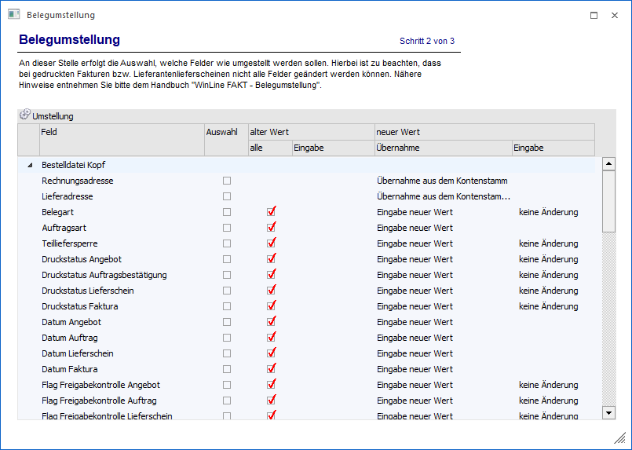

In dem zweiten Bereich der Belegumstellung wird die eigentliche Umstellung definiert, d.h. was soll wie geändert werden.
Hinweis
Wenn Belege, bei denen Belegzeilen gesperrt sind, von einem Benutzer, welcher kein Administrator ist, in der Belegumstellung umgestellt werden sollen, so werden keine Änderungen durchgeführt, welche die Belegzeilen betreffen! D.h. Änderungen, die unter "Bestelldatei Mitte" aktiviert werden (z.B. die Preisfindung, die unter "Preisliste" angegeben werden kann), bleiben für gesperrte Belegzeilen bei der Belegumstellung durch einen nicht Admin-Benutzer unberücksichtigt.

In der Tabelle werden die Felder, welche umgestellt werden können, in einer Baumstruktur (gruppiert nach "Bestelldatei Kopf" und "Bestelldatei Mitte") angezeigt.
Ø Feld
In dieser Spalte werden jene Felder aufgelistet, welche umgestellt werden können.
Achtung
Ob eine Umstellung generell möglich ist, kann von der Art des Ausgangsbelegs abhängig sein. Details hierzu können der Beschreibung "Welches Feld kann wann umgestellt werden?" (s.u.) entnommen werden. Des Weiteren bieten einige Felder spezielle Sonderfunktionen, welche in der Beschreibung "Felder mit Sonderfunktionen" (s.u.) aufgelistet werden.
Ø Auswahl
Ist die Option aktiv, so wird das Feld bei der Umstellung berücksichtigt.
Ø alter Wert (alle bzw. Eingabe)
Wird die Option "alle" aktiviert, so werden ALLE Belege ohne Einschränkung umgestellt. Bleibt die Option deaktiviert, so kann in der Spalte "Eingabe" ein Wert eingetragen werden, wobei dann nur jene Belege umgestellt werden die der Selektion entsprechen und den eingestellten Wert hinterlegt haben.
Hinweis
Beim Verlassen der Zeile wird geprüft, ob ein gültiger alter Wert vorhanden ist! D.h. es muss entweder die Option "alle" aktiviert sein oder die Option "alle" deaktiviert und eine Eingabe vorhanden sein. Ist kein gültiger alter Wert vorhanden, so wird automatisch die Option "alle" gesetzt.
Ø neuer Wert (Übernahme / Eingabe)
Aus der Auswahlliste "Übernahme" kann entschieden werden, ob ein neuer Wert fix eingegeben werden soll (Auswahl "Eingabe neuer Wert") oder ob der Wert aus dem Stamm übernommen werden soll (Auswahl "Übernahme…").
ü Eingabe neuer Wert
Wird diese
Option gewählt, so kann ein neuer Wert eingegeben bzw. aus einer Auswahlliste
ausgewählt werden.
ü Übernahme…
Bei der Übernahme
aus dem Stamm stehen unterschiedliche Auswahlmöglichkeiten zur Verfügung.
Die
Felder "Druckstatus Angebot bis Faktura", "Listbild", "Endmakro", "Colli",
"Erlöskonto", "Kostenstelle" und "Kostenträger" können aus der Belegart
übernommen werden.
Die Felder "Belegart", "Teilliefersperre",
"Summenrabatt%", "Tour", "Gebiet", "Preisliste", "Zahlungskondition",
"Belegkopftexte1 bis 4", "Auspr.1 bis 2", "OP-Kennzeichen" und "Vertreter"
können aus dem Kontenstamm übernommen werden.
Das Feld "Bezeichnung"
(Artikelbezeichnung) kann aus dem Artikelstamm übernommen werden.
Das Feld
"Umsatzsteuerprozent Zeile" kann aus dem Artikel- und Kontenstamm übernommen
werden.
Welches Feld kann wann umgestellt werden?
Die folgenden Felder können immer geändert werden:
ü Bestelldatei Kopf - Rechnungsadresse
ü Bestelldatei Kopf - Lieferadresse
ü Bestelldatei Kopf - Auftragsart
ü Bestelldatei Kopf - Teilliefersperre
ü Bestelldatei Kopf - Druckstatus Angebot bis Faktura
ü Bestelldatei Kopf - Flag Freigabekontrolle Angebot bis Faktura (d.h. Freigabestatus)
ü Bestelldatei Kopf - Bestellt von
ü Bestelldatei Kopf - Listbild
ü Bestelldatei Kopf - Endmakro
ü Bestelldatei Kopf - Tourennummer (d.h. Tour)
ü Bestelldatei Kopf - Gebiet
ü Bestelldatei Kopf - Textzeile1 bis 10
ü Bestelldatei Kopf - Freier Text 1 bis 4 (d.h. Belegkopftexte 1 bis 4; Bezeichnung stammt aus den Belegoptionen)
ü Bestelldatei Kopf - Auspr.1-2
ü Bestelldatei Kopf - OP-Kennzeichen
ü Bestelldatei Kopf - Projektnummer
ü Bestelldatei Kopf - Lagerort
Die folgenden Felder können bei gedruckten oder gerechneten Fakturen NICHT geändert werden:
ü Bestelldatei Kopf -Zahlungskondition
ü Bestelldatei Kopf - Valutadatum
ü Bestelldatei Mitte - Bezeichnung (d.h. Artikelbezeichnung)
ü Bestelldatei Mitte - Prov.Code (d.h. Provisionscode)
ü Bestelldatei Mitte - Erlöskonto
ü Bestelldatei Mitte - Kostenträger
ü Bestelldatei Mitte - Kostenstelle
ü Bestelldatei Mitte - Vertreternummer
ü Bestelldatei Mitte - Kostenart (das Sachkonto der Belegzeile muss eine Kostenart hinterlegt haben)
Die folgenden Felder können bei gedruckten oder gerechneten Fakturen bzw. Lieferantenlieferscheinen NICHT geändert werden:
ü Bestelldatei Kopf - Summenrabatt%
ü Bestelldatei Kopf - Preisliste
ü Bestelldatei Kopf - Ersatzartikelnummer/-bez. bei Preisfindung
ü Bestelldatei Kopf - FW-Zeile (d.h. Fremdwährung)
ü Bestelldatei Mitte - Umsatzsteuerprozent Zeile
Die folgenden Felder können bei gedruckten oder gerechneten Fakturen bzw. Lieferscheinen NICHT geändert werden:
ü Bestelldatei Kopf - Belegart
ü Bestelldatei Mitte - Colli
Die folgenden Felder können nur geändert werden, wenn der Beleg in der jeweiligen Stufe noch NICHT gerechnet oder gedruckt wurde:
ü Bestelldatei Kopf - Datum Angebot bis Faktura
Das folgende Feld ist steht nur für Verkaufsbelege zur Verfügung:
ü Bestelldatei Kopf - Auftragsreferenz
Die folgenden Funktionen können nur bei Angeboten oder Aufträgen genutzt werden:
ü Bestelldatei Mitte - Handelsstückliste
ü Bestelldatei Mitte - Zeilenformel ausführen
ü Bestelldatei Mitte - Versandregel aktualisieren (Beleg darf noch nicht kommissioniert sein)
Das folgende Feld steht nur für Fakturen zur Verfügung:
ü Bestelldatei Kopf - e-Billing-Kennzeichen
Felder mit Sonderfunktionen
Die folgenden Felder bieten Sonderfunktionen bzw. spezielle Programmautomatiken an:
Ø Rechnungsadresse (Bestelldatei Kopf)
Wird hier die Option "Auswahl" aktiviert, so wird die Adresse des Rechnungsempfängers mit jener aus dem Kontenstamm aktualisiert.
Ø Lieferadresse (Bestelldatei Kopf)
Wird hier die Option "Auswahl" aktiviert, so wird die Adresse des Lieferempfängers mit jener aus dem Kontenstamm aktualisiert.
Ø Druckstatus (Bestelldatei Kopf)
Der Druckstatus kann in den noch nicht gerechneten Belegstufen von "A", "M", "N", "S" auf "A", "M", "N", "S" umgestellt werden.
Wird als alter Wert "*" (gerechnet und gedruckt) ausgewählt, so kann als neuer Wert nur "D" (druckbereit) ausgewählt werden!
Beispiel
Die WEB Belege sollen in Aufträge umgewandelt werden. Als Selektion im ersten Schritt wird WEB-Bestellung aktiviert. Als neuer Wert wird z.B. in den Stufen "Auftrag", "Lieferschein" und "Faktura" jeweils ein "A" eingetragen. Damit werden alle WEB-Bestellungen in Belege mit dem Status "A" umgewandelt und können anschließend über den Belegdruck gerechnet und gedruckt werden.
Ø Preisliste (Bestelldatei Kopf)
Mit Hilfe dieses Felds kann die Preisliste des Belegs umgestellt und / oder Preise neu berechnet werden. Was im Detail durchgeführt werden soll, wird über die Auswahlliste unter "Übernahme" definiert.
ü Eingabe neuer Wert
Bei dieser
Option kann im Feld "Eingabe" eine neue Preisliste hinterlegt werden. D.h. es
werden alle der Selektion entsprechenden Belege auf diesen neuen Wert
umgestellt. Zusätzlich findet automatisch eine Preisfindung statt, d.h. alle
Artikel der Belege erhalten aufgrund der (neuen) Preisliste ggfs. aktualisierte
Preise.
ü Übernahme aus dem
Kontenstamm
Wird die Option "Übernahme aus dem Kontenstamm" gewählt, so kann
kein neuer Wert eingetragen werden, da der Wert aus dem jeweiligen Personenkonto
des Beleges genommen wird. Zusätzlich findet automatisch eine Preisfindung
statt, d.h. alle Artikel der Belege erhalten aufgrund der (neuen) Preisliste
ggfs. aktualisierte Preise.
ü Preise neu berechnen
Wenn die
Option "Preise neu berechnen" gewählt wird, so kann kein neuer Wert eingetragen
werden. Es findet ausschließlich eine Neuberechnung der Preise (aufgrund der
Preisliste des Belegs und zum Belegdatum) für die zur Selektion passenden
Belege statt.
ü Preise zum Tagesdatum neu
berechnen
Wenn die Option "Preise zum Tagesdatum neu berechnen" gewählt wird,
so kann kein neuer Wert eingetragen werden. Es findet ausschließlich eine
Neuberechnung der Preise (aufgrund der Preisliste des Belegs und zum
Tagesdatum) für die zur Selektion passenden Belege statt.
ü Preise ohne Rabatt neu
berechnen
Wenn die Option "Preise ohne Rabatt neu berechnen" gewählt wird, so
kann kein neuer Wert eingetragen werden. Es findet ausschließlich eine
Neuberechnung der Preise (aufgrund der Preisliste des Belegs und zum
Belegdatum) für die zur Selektion passenden Belege statt. Hierbei werden die
Zeilenrabatte nicht berücksichtigt. D.h. Zeilenrabatte, die in den
Belegen vorhanden (oder eben nicht vorhanden) sind, werden dadurch nicht
verändert.
Hinweis
Bei bereits gerechneten Lieferantenlieferscheinen, Lieferantenfakturen und Kundenfakturen können die Preise nicht mehr umgestellt werden.
Ø Ersatzartikelnummer/-bez. bei Preisfindung (Bestelldatei Kopf)
Mit Hilfe dieses Felds kann die Ersatzartikelnummer und die Ersatzartikelbezeichnung der Belegzeile angepasst werden. Dieses ist allerdings nur dann möglich, wenn die Preisliste ebenfalls geändert wird (siehe Feld "Preisliste"), da die Daten (Nummer und Bezeichnung) aus dem gefundenen Preislisteneintrag stammen. Was im Detail durchgeführt werden soll, wird über die Auswahlliste unter "Übernahme" definiert.
ü nie übernehmen
Die
Ersatzartikelnummer und -bezeichnung wird nicht geändert, d.h. die Einträge
bleiben so erhalten wie sie waren.
ü immer übernehmen
Die
Ersatzartikelnummer und -bezeichnung wird aus dem gefundenen Preislisteneintrag
übernommen.
Hinweis
Wenn die Felder in dem Preislisteneintrag nicht gefüllt sind, so werden (wie in der Belegerfassung üblich) die normale Artikelnummer und -bezeichnung übernommen.
ü nur übernehmen wenn nicht
gefüllt
Nur wenn die Ersatzartikelnummer oder -bezeichnung in der Belegzeile
nicht gefüllt ist, wird der Werte aus der Preisliste übernommen (wenn dort
vorhanden).
Hinweis
Bei bereits gerechneten Lieferantenlieferscheinen, Lieferantenfakturen und Kundenfakturen können die Preise und somit auch die Ersatzartikelnummer und -bezeichnung nicht mehr umgestellt werden.
Ø FW-Zeile (Bestelldatei Kopf)
Mit Hilfe dieses Felds kann eine Umstellung der Fremdwährung im Belegkopf und Umrechnung der Preise auf die neue Währung erflogen. Wird als alter Wert "Landeswährung" belassen und als neuer Wert z.B. "USD" ausgewählt, so werden in allen selektierten Belegen, die in Landeswährung erfasst wurden, die Preise auf USD umgerechnet.
Wird als alter Wert "000 - alle Euro-Währungen" ausgewählt, dann werden alle selektierten Belege, bei denen eine Fremdwährung mit der Option "Euro-Berechnung" hinterlegt ist, umgestellt.
Hinweis 1
Stellt man auf eine Fremdwährung um die mehrere Einträge in der Fremdwährungshistorie hat, so wird immer mit dem Datum nach letzten Kurs umgerechnet.
Hinweis 2
Bei bereits gerechneten Lieferantenlieferscheinen, Lieferantenfakturen und Kundenfakturen kann die FW-Zeile nicht mehr umgestellt werden, da hier bereits eine Buchung erfolgt ist.
Ø Projektnummer (Bestelldatei Kopf)
Durch Aktivierung dieses Felds kann die Projektnummer im Belegkopf geändert werden. Hierbei wird auch gleichzeitig die Projektnummer in der Belegmitte geändert!
Ø Valutadatum (Bestelldatei Kopf)
Durch Aktivieren dieser Felds kann das Valutadatum für die Umstellung definiert werden. D.h. wird die Option aktiviert, kann im Feld "Eingabe" ein Valutadatum angegeben werden (dieses wird in die umzustellenden Belege kopiert). Wird die Option aktiviert und das Feld "Eingabe" bleibt leer, so bleibt dieses Datum auch im umzustellenden Beleg leer.
Hinweis
Eine Umstellung des Valutadatums ist bei "gerechneten" oder "gerechneten und gedruckten" Fakturen nicht mehr möglich!
Ø e-Billing-Kennzeichen (Bestelldatei Kopf)
Mit Hilfe dieses Feldes kann das Exportkennzeichen für eine bereits erfolgte e-Billing-Ausgabe wieder zurückgesetzt werden, wodurch eine erneute Ausgabe ermöglicht wird. Unter "alter Wert" stehen die Auswahlmöglichkeiten "alle exportierten" bzw. die einzelnen Typen des e-Billing-Kennzeichens (1 bis 14) zur Verfügung.
Ø Vertreternummer (Bestelldatei Mitte)
Über dieses Feld kann der Vertreter umgestellt werden. Wird ein neuer Wert eingetragen, werden alle der Selektion entsprechenden Belege auf diesen neuen Wert umgestellt. Wird zusätzlich ein alter Wert eingetragen, dann werden nur jene Belege umgestellt, die der Selektion entsprechen und den alten Wert hinterlegt haben.
Wird die Option "Übernahme aus dem Kontenstamm" aktiviert, so kann kein neuer Wert eingetragen werden, hier wird der Wert aus dem jeweiligen Personenkonto des Beleges genommen.
Bei Kundenfakturen kann der Vertreter nicht mehr umgestellt werden, da hier die Provisionsberechnung bereits stattgefunden hat.
Ø Handelsstückliste (Bestelldatei Mitte)
Die Option "Handelsstückliste" kann nur bei Angeboten und Aufträgen verwendet werden. Zwei Optionen stehen hierbei unter "Übernahme" zur Verfügung:
ü Stückliste neu erzeugen
Mit
dieser Option wird die Handelsstückliste neu aus dem Stamm erzeugt und der
Einstandspreis entsprechend neuberechnet. Alle manuellen Änderungen in der
vorhandenen Handelsstückliste im Beleg werden dadurch verworfen (d.h., eine
Initialisierung mit den Daten aus dem HSL-Stamm wird ausgeführt).
ü Einstandspreis
aktualisieren
Mit dieser Option wird nur der Einstandspreis des HSL-Artikels
aus der Summe der Komponenten neu berechnet und in den Beleg geschrieben.
Hinweis - Fertigung
Handelsstücklistenartikel mit der Kennzeichnung "Fertigungsstückliste" werden grundsätzlich nur umgestellt, wenn es sich um einen Einkaufsbeleg (Lieferantenbeleg oder Fertigungsbeleg) handelt. Bei dem Belegtyp Fertigungsbeleg wird (neben der Umstellung an sich) der Einzelpreis immer über den Einstandspreis der Komponenten neu ermittelt und eingefügt.
Ø Zeilenformel ausführen (Bestelldatei Mitte)
Mit der Option "Zeilenformel ausführen" wird eine eventuell vorhandene Zeilenformel (nur bei Angeboten und Aufträgen) erneut ausgeführt. Dazu werden am Umstellungsprotokoll die Werte "Menge" und "Preis" ausgegeben.
Hinweis
Bei dem Ausführen eines Preisfindung via Zeilenformel (z.B. über die Funktion "Invoicing.PriceCalculation") wird der Gesamtpreis nicht automatisch neu belegt! Dieser muss in der Formel selber errechnet und über "Invoicing.Total =" definiert werden.
Ø Versandregel aktualisieren (Bestelldatei Mitte)
Die Option "Versandregel aktualisieren" kann nur bei Angeboten und Aufträgen, die noch nicht kommissioniert wurden, verwendet werden. Dabei wird aus den Einstellungen des Collistamms und der Versandart (Belegkopftexte) die Versandregel aktualisiert.
Hinweis
In der Belegumstellung werden beim Aktualisieren der Versandregel Aufträge nicht berücksichtigt, sobald Kommissionierungen vorhanden sind, unabhängig davon ob für den Auftrag bereits eine Packliste im Originaldruck gedruckt wurde oder nicht.